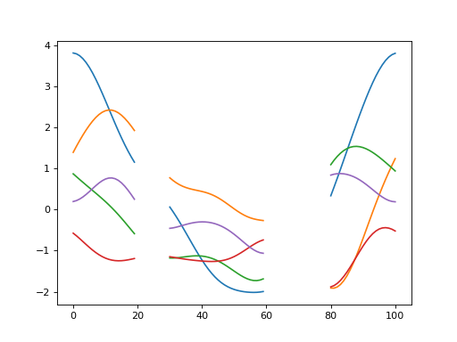
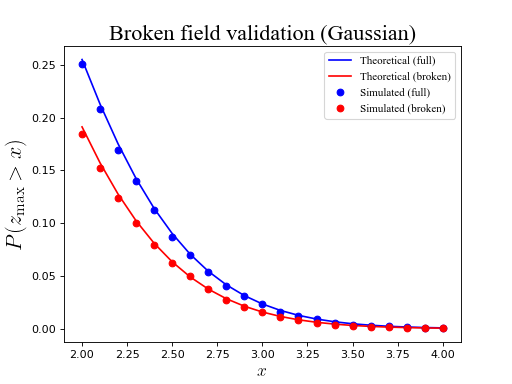

Broken fields¶
“Broken” fields are piecewise continuous over some domain. RFT accurately predicts upcrossing behavior for broken fields via the topological features of the broken domain.
Broken field generation¶
First specify field parameters:
>>> import rft1d
>>> nResponses = 5
>>> nNodes = 101
>>> FWHM = 20.0
Then create a boolean mask:
>>> nodes = np.array([True]*nNodes) #nothing masked out
>>> nodes[20:30] = False #this region will be masked out
>>> nodes[60:80] = False #this region will be masked out
Last, submit the mask to rft1d.randn1d to generate broken Gaussian fields:
>>> np.random.seed(0)
>>> y = rft1d.randn1d(nResponses, nodes, FWHM)
Plot:
>>> from matplotlib import pyplot
>>> pyplot.plot(y.T)
(Source code, png, hires.png, pdf)
{kind=link}
{kind=link}

Validations for broken fields¶
Broken field validations can be conducted by submitting a binary mask which describes the broken domain to relevant rft1d functions and classes. The validations in the figure below using the following mask:
>>> b = np.array([True]*nNodes) #nothing masked out
>>> b[20:45] = False #this region is masked out
>>> b[60:80] = False #this region is masked out
And then submitting it to the rft1d Gaussian survival function:
>>> heights = np.linspace(2.0, 4, 21)
>>> sf_expected = rft1d.norm.sf(heights, b, FWHM)
Click on “source code” for the full script.
(Source code, png, hires.png, pdf)
{kind=link}
{kind=link}
